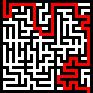
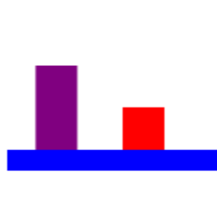
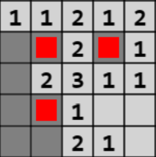

JavaScript Games
Here you can find a few basic games I made using JavaScript and the HTML Canvas element.
Mazes
An old project, once upon a time made in Java, moved over to JS and updated somewhat.
Beginning with a 4x4 maze, each time you reach the end a bigger maze is made, up to 9x16.
Each maze also includes a randomly placed key, required to open the 'gate' on the exit.
Click here to play the game live, or click here to view the source code repository.
Platformer
A simple platformer. More a proof of concept than an actual game.
Currently has just two, near-identical, levels and no pretty graphics.
However, it does have a player, lives, enemies, score, etc.
Click here to play the game live, or click here to view the source code repository.
Minesweepers
A, mostly complete, clone of minesweeper.
Currently no ability to change board size/mine number, nor clear all attached empty cells.
However, it does otherwise work. Right click to mark mines.
Click here to play the game live, or click here to view the source code repository.